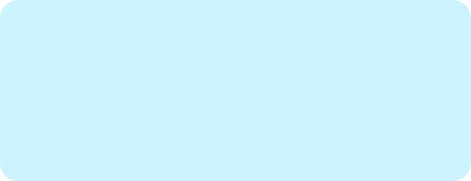
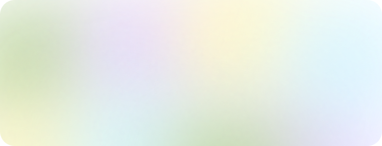
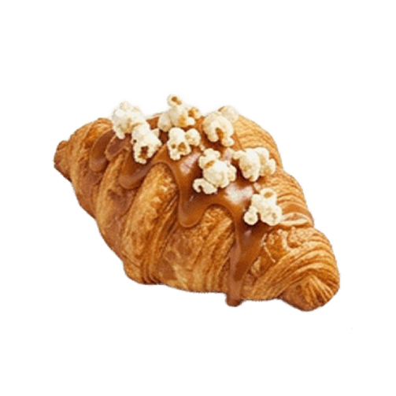
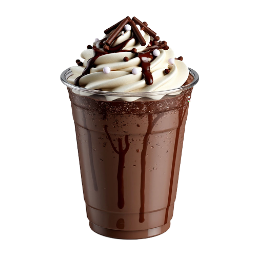
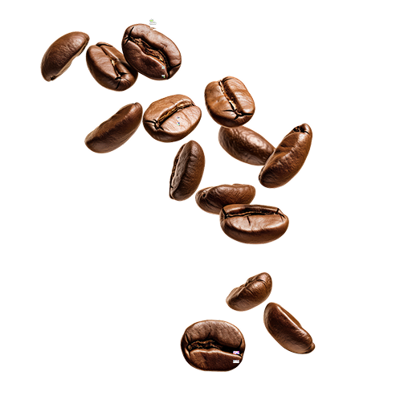
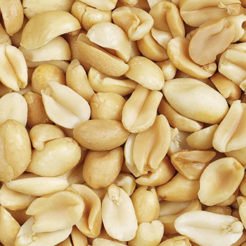
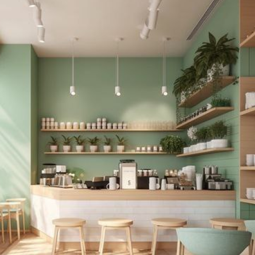

Перетекающие MBTI При наведении циклически меняется цвет подложки
Разноцветный фон Используется для фона на цифровых и печатных носителях
Разноцветные пятна Используются для купона
Уютная атмосфера

Напитки по типам

Детали интерьера

Гости за дегустацией
Фотостиль бренда: естественное освещение, тёплая тональность, акцент на деталях – текстура кофейной пенки, капли на стакане, рука, держащая чашку.

Фирменная упаковка